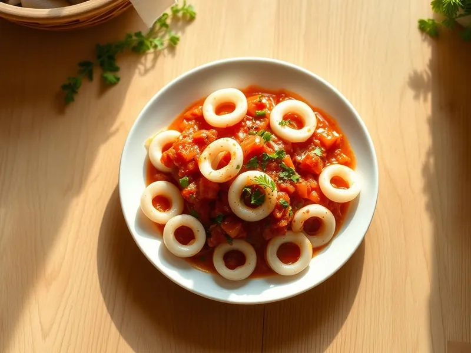

Кальмары в томатном соусе с чесноком
Кольца кальмаров в густом томатном соусе с луком, чесноком и травами
25 мин3 порц.345 ккал на порциюБ 38 · Ж 15 · У 16Средиземноморская кухня
Открыть в приложении: порции, таймеры, список покупок
Продукты на 3 порц.
- Кальмар600 г
- Томаты в собственном соку1 шт
- Лук репчатый1 шт
- Чеснок3 зуб.
- Оливковое масло2 ст. л.
- Сушёные травы1 ч. л.
- Сахар1 ч. л.
- Сольпо вкусу
- Перец чёрный молотый1 щеп.
- Петрушка по желаниюпо вкусу
Как готовить
- Очистите кальмары и нарежьте кольцами 1 см. Лук нарежьте мелко, чеснок раздавите.
- Обжарьте лук на оливковом масле на среднем огне 4 минуты, добавьте чеснок и жарьте 1 минуту.
- Добавьте томаты, разомните их, положите сахар, травы, соль и перец и тушите 10 минут, пока соус не станет густым.
- Выложите кальмары в кипящий соус и готовьте 2-3 минуты, пока кольца не станут белыми.
- Сразу снимите с огня, посыпьте петрушкой.
Совет. Кальмар бывает мягким либо после 3 минут, либо после 40 минут тушения, а в промежутке он жёсткий.